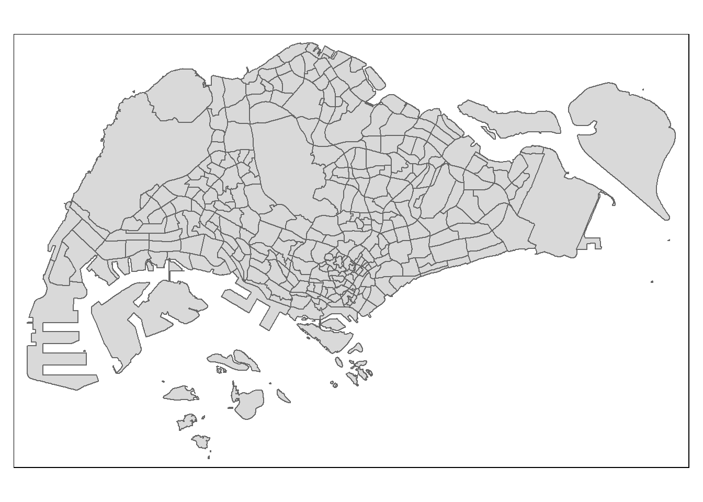

pacman::p_load(tmap, sf, sp, caret, stplanr, reshape2, broom, tidyverse)In-Class Exercise 11: Spatial Interaction Models
Import Packages
Import Data
Aspatial
odbus <- read_csv("data/aspatial/origin_destination_bus_202210.csv")pop <- read_csv("data/aspatial/pop.csv")Geospatial
busstop <- st_read(dsn="data/geospatial", layer="BusStop") %>%
st_transform(crs=3414)Reading layer `BusStop' from data source
`C:\Jenpoer\IS415-GAA\In-Class-Exercises\chapter-15\data\geospatial'
using driver `ESRI Shapefile'
Simple feature collection with 5159 features and 3 fields
Geometry type: POINT
Dimension: XY
Bounding box: xmin: 3970.122 ymin: 26482.1 xmax: 48284.56 ymax: 52983.82
Projected CRS: SVY21mpsz <- st_read(dsn="data/geospatial", layer="MPSZ-2019") %>%
st_transform(crs=3414)Reading layer `MPSZ-2019' from data source
`C:\Jenpoer\IS415-GAA\In-Class-Exercises\chapter-15\data\geospatial'
using driver `ESRI Shapefile'
Simple feature collection with 332 features and 6 fields
Geometry type: MULTIPOLYGON
Dimension: XY
Bounding box: xmin: 103.6057 ymin: 1.158699 xmax: 104.0885 ymax: 1.470775
Geodetic CRS: WGS 84Data Preprocessing
Convert the numerical data into nominal scale data.
odbus$ORIGIN_PT_CODE <- as.factor(odbus$ORIGIN_PT_CODE)
odbus$DESTINATION_PT_CODE <- as.factor(odbus$DESTINATION_PT_CODE)Extract number of trips during morning peak hour on weekdays
odbus7_9 <- odbus %>%
filter(DAY_TYPE == "WEEKDAY") %>%
filter(TIME_PER_HOUR >= 7 & TIME_PER_HOUR <= 9) %>%
group_by(ORIGIN_PT_CODE,
DESTINATION_PT_CODE) %>%
summarise(TRIPS = sum(TOTAL_TRIPS))Combine MPSZ information into bus stop data
busstop_mpsz <- st_intersection(busstop, mpsz) %>%
select(BUS_STOP_N, SUBZONE_C) %>%
st_drop_geometry()It seems that 5 bus stops have vanished! This is because there are 5 stops in Johor.
tmap_mode('view')
tm_shape(busstop %>% filter(!(BUS_STOP_N %in% busstop_mpsz$BUS_STOP_N))) +
tm_dots(col="purple", alpha=0.4)Now, we can append the planning subzone code onto the odbus7_9.
od_data <- left_join(odbus7_9, busstop_mpsz,
by = c("ORIGIN_PT_CODE" = "BUS_STOP_N")) %>%
rename(ORIGIN_BS = ORIGIN_PT_CODE,
ORIGIN_SZ = SUBZONE_C,
DESTIN_BS = DESTINATION_PT_CODE)Check for duplicate records
duplicate <- od_data %>%
group_by_all() %>%
filter(n()>1) %>%
ungroup()
duplicate# A tibble: 930 × 4
ORIGIN_BS DESTIN_BS TRIPS ORIGIN_SZ
<chr> <fct> <dbl> <chr>
1 22501 22009 3 JWSZ09
2 22501 22009 3 JWSZ09
3 22501 22451 49 JWSZ09
4 22501 22451 49 JWSZ09
5 22501 22469 11 JWSZ09
6 22501 22469 11 JWSZ09
7 22501 22479 29 JWSZ09
8 22501 22479 29 JWSZ09
9 22501 22509 2 JWSZ09
10 22501 22509 2 JWSZ09
# … with 920 more rowsIt seems that there are 930 duplicated records. We can remove them.
od_data <- unique(od_data)Now, we can also join the destination subzone information.
od_data <- left_join(od_data, busstop_mpsz, by = c("DESTIN_BS" = "BUS_STOP_N")) %>%
rename(DESTIN_SZ = SUBZONE_C)duplicate2 <- od_data %>%
group_by_all() %>%
filter(n()>1) %>%
ungroup()
duplicate2# A tibble: 1,216 × 5
ORIGIN_BS DESTIN_BS TRIPS ORIGIN_SZ DESTIN_SZ
<chr> <chr> <dbl> <chr> <chr>
1 1012 82221 1 <NA> GLSZ05
2 1012 82221 1 <NA> GLSZ05
3 1112 51071 15 <NA> CCSZ01
4 1112 51071 15 <NA> CCSZ01
5 1112 53041 4 <NA> BSSZ01
6 1112 53041 4 <NA> BSSZ01
7 1112 82221 1 <NA> GLSZ05
8 1112 82221 1 <NA> GLSZ05
9 1121 51071 3 <NA> CCSZ01
10 1121 51071 3 <NA> CCSZ01
# … with 1,206 more rowsWe have 1216 duplicated records. We can remove them and also drop the NA records.
od_data <- unique(od_data) %>%
drop_na()Visualise subzones
tmap_mode("plot")
qtm(mpsz)
mpsz <- mpsz[order(mpsz$SUBZONE_C),]
head(mpsz,10)Simple feature collection with 10 features and 6 fields
Geometry type: MULTIPOLYGON
Dimension: XY
Bounding box: xmin: 26154.57 ymin: 37511.2 xmax: 31072.47 ymax: 41804.65
Projected CRS: SVY21 / Singapore TM
SUBZONE_N SUBZONE_C PLN_AREA_N PLN_AREA_C REGION_N
171 ANG MO KIO TOWN CENTRE AMSZ01 ANG MO KIO AM NORTH-EAST REGION
170 CHENG SAN AMSZ02 ANG MO KIO AM NORTH-EAST REGION
163 CHONG BOON AMSZ03 ANG MO KIO AM NORTH-EAST REGION
330 TOWNSVILLE AMSZ04 ANG MO KIO AM NORTH-EAST REGION
329 SHANGRI-LA AMSZ05 ANG MO KIO AM NORTH-EAST REGION
172 KEBUN BAHRU AMSZ06 ANG MO KIO AM NORTH-EAST REGION
233 SEMBAWANG HILLS AMSZ07 ANG MO KIO AM NORTH-EAST REGION
254 TAGORE AMSZ08 ANG MO KIO AM NORTH-EAST REGION
242 YIO CHU KANG WEST AMSZ09 ANG MO KIO AM NORTH-EAST REGION
252 YIO CHU KANG AMSZ10 ANG MO KIO AM NORTH-EAST REGION
REGION_C geometry
171 NER MULTIPOLYGON (((29692.8 389...
170 NER MULTIPOLYGON (((30384.33 39...
163 NER MULTIPOLYGON (((30676.17 39...
330 NER MULTIPOLYGON (((29649.88 38...
329 NER MULTIPOLYGON (((28228.2 392...
172 NER MULTIPOLYGON (((28491.21 39...
233 NER MULTIPOLYGON (((27744.03 38...
254 NER MULTIPOLYGON (((27193.46 41...
242 NER MULTIPOLYGON (((29269.91 39...
252 NER MULTIPOLYGON (((29598.36 39...Calculate Distance Matrix
If we’re using sp, we can use spDists to calculate a distance matrix.
mpsz_sp <- as(mpsz, "Spatial")
dist <- spDists(mpsz_sp)The distance matrix does not preserve the names of the subzones. As such, we can rename them with the subzone names.
sz_names <- mpsz$SUBZONE_Ccolnames(dist) <- sz_names
rownames(dist) <- sz_namesWe can pivot it into a longer form.
distPair <- melt(dist) %>%
rename(dist = value)
head(distPair, 10) Var1 Var2 dist
1 AMSZ01 AMSZ01 0.0000
2 AMSZ02 AMSZ01 810.4491
3 AMSZ03 AMSZ01 1360.9294
4 AMSZ04 AMSZ01 840.4432
5 AMSZ05 AMSZ01 1076.7916
6 AMSZ06 AMSZ01 805.2979
7 AMSZ07 AMSZ01 1798.7526
8 AMSZ08 AMSZ01 2576.0199
9 AMSZ09 AMSZ01 1204.2846
10 AMSZ10 AMSZ01 1417.8035distPair %>%
filter(dist > 0) %>%
summary() Var1 Var2 dist
AMSZ01 : 331 AMSZ01 : 331 Min. : 173.8
AMSZ02 : 331 AMSZ02 : 331 1st Qu.: 7149.5
AMSZ03 : 331 AMSZ03 : 331 Median :11890.0
AMSZ04 : 331 AMSZ04 : 331 Mean :12229.4
AMSZ05 : 331 AMSZ05 : 331 3rd Qu.:16401.7
AMSZ06 : 331 AMSZ06 : 331 Max. :49894.4
(Other):107906 (Other):107906 A constant distance value of 50m is added to the intra-zone distance. It’s okay to put 50m because we have checked that the minimum distance between subzones are 173.8 m.
distPair$dist <- ifelse(distPair$dist == 0, 50, distPair$dist)distPair <- distPair %>%
rename(orig = Var1,
dest = Var2)Lastly, we can save it into RDS format!
write_rds(distPair, "data/rds/distPair.rds")
write_rds(od_data, "data/rds/od_data.rds")Join Population Data with Subzones
pop <- pop %>%
left_join(mpsz,
by = c("PA" = "PLN_AREA_N",
"SZ" = "SUBZONE_N")) %>%
select(1:6) %>%
rename(SZ_NAME = SZ,
SZ = SUBZONE_C)Flow Analysis
Preparing data for flow analysis
od_data <- read_rds("data/rds/od_data.rds")We aggregate the data according to subzone.
flow_data <- od_data %>%
group_by(ORIGIN_SZ, DESTIN_SZ) %>%
summarise(TRIPS = sum(TRIPS))We need to update it with the distance information.
flow_data1 <- flow_data %>%
left_join(distPair,
by = c("ORIGIN_SZ" = "orig",
"DESTIN_SZ" = "dest"))Now, we can update it with the population data as well.
Origin:
flow_data1 <- flow_data1 %>%
left_join(pop,
by = c(ORIGIN_SZ = "SZ")) %>% # join with the origin
rename(ORIGIN_AGE7_12 = AGE7_12,
ORIGIN_AGE13_24 = AGE13_24,
ORIGIN_AGE25_64 = AGE25_64) %>%
select(-c(PA, SZ_NAME))Destination:
flow_data1 <- flow_data1 %>%
left_join(pop,
by = c(DESTIN_SZ = "SZ")) %>% # join with the destination
rename(DESTIN_AGE7_12 = AGE7_12,
DESTIN_AGE13_24 = AGE13_24,
DESTIN_AGE25_64 = AGE25_64) %>%
select(-c(PA, SZ_NAME))